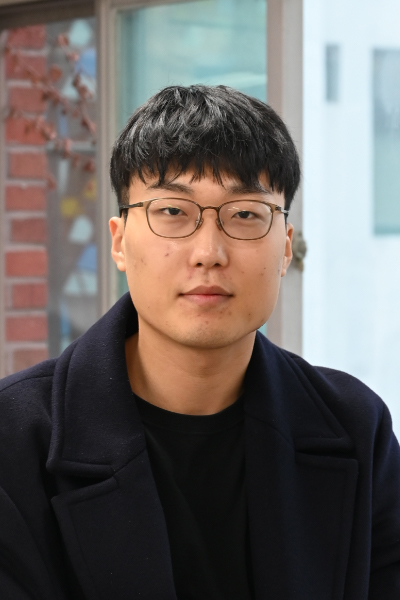
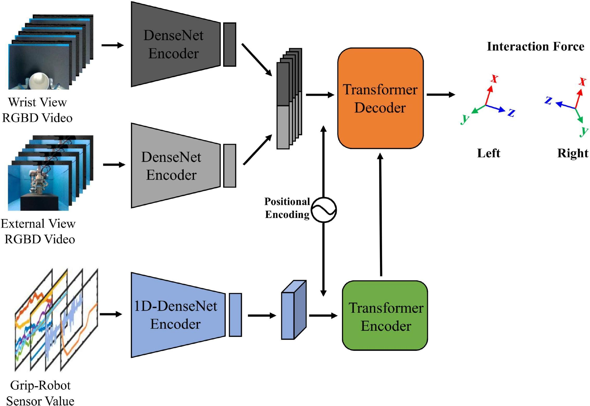
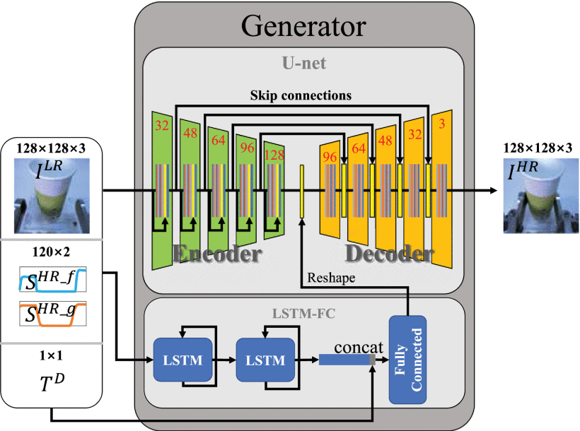
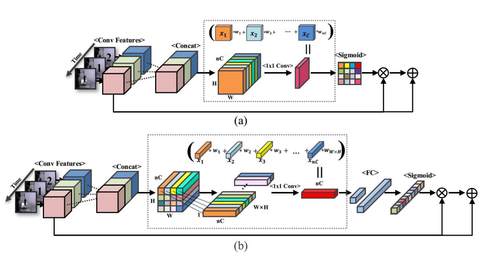
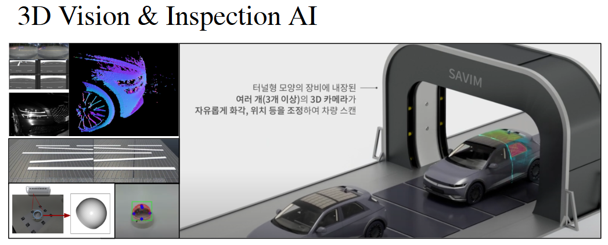
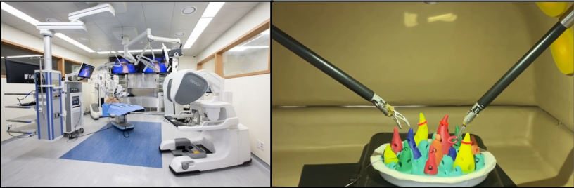
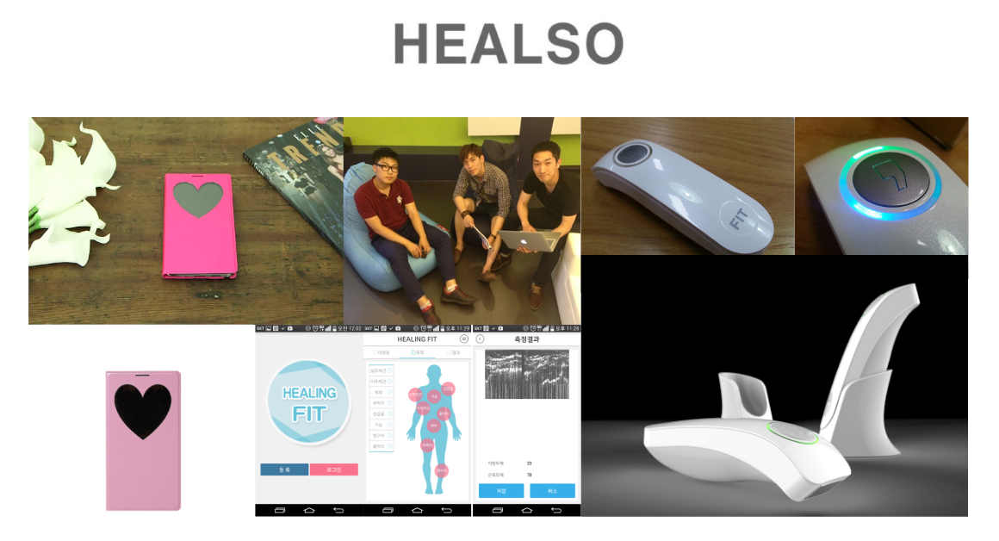

Lee, Kang-Won; Ko, Dae-Kwan; Kim, Yong-Jun; Ryu, Jee-Hwan; Lim, Soo-Chul
IEEE T-ITS · 2024

I am a Ph.D. candidate in Mechanical Engineering at Dongguk University, advised by Professor Soo-Chul Lim. I received my M.S. in the same department.
My research lies at the intersection of robotics, AI learning, and the interaction forces between robots, objects, and humans. I am working toward humanoid systems that interact with the physical world in a human-like manner by integrating haptics into robust behavior and planning.






